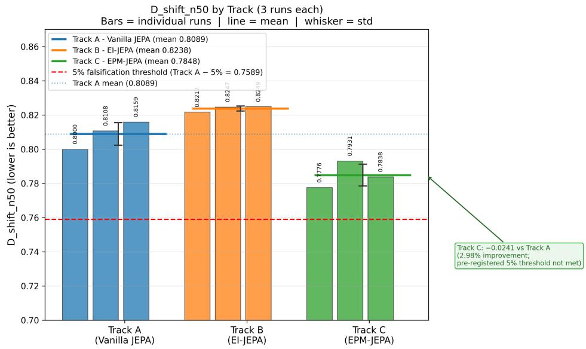

先说结论。如果关注 JEPA world model 的在线适应和 memory modulation，这篇值得快速扫读。 把 JEPA-family world model 的 adaptation 拆成“改 hidden state”与“改 operator”两类机制，并做 preregistered comparison。
Figureure 1 · : EPM-JEPA architecture overviewFigure 1: EPM-JEPA architecture overview. (a) Overall architecture: the encoder maps each input frame to a latent state $z _ { t } ;$ the EMA target encoder provides stop-gradient prediction targets for the JEPA loss; the predictor (with LoRA weight modulation in Track C) produces $\hat { z } _ { t + k }$ for $k \in \{ 5 , 1 0 , 2 0 \}$ }; the memory subsystem (boundary detector, experience buffer, experience encoder, attention aggregation) encodes accumulated experience into $e _ { \mathrm { a g g } } . \ ( \mathbf { b } )$ Experience encoder detail: each buffered transition pair is encoded by a 2-layer transformer and mean-pooled to $e _ { i } \in \mathbb { R } ^ { 6 4 } .$ . (c) Attention aggregation detail: the current latent $z _ { t }$ attends over buffer entries to produce $e _ { \mathrm { a g g } } .$ (d) Three-track comparison: Track A (Vanilla JEPA, no memory), Track B (EI-JEPA, residual injection), and Track C (EPM-JEPA, LoRA weight modulation) share the encoder, EMA target, and predictor base, differing only in how $e _ { \mathrm { a g g } }$ is consumed.这张图概括 EPM-JEPA 的整体方法流程。阅读时先看模块之间传递的训练信号，再看作者如何把目标拆成可优化的子问题。

$D _ { \mathrm { s h i f t } } ^ { n = 5 0 }$ show mean ± std$D _ { \mathrm { s h i f t } } ^ { n = 5 0 }$ show mean ± std. The pre-registered comparison (Track C vs Track B) yields Outcome C (null result, $\delta = 4 . 7 4 \% , \ : \lvert \delta \rvert < 5 \% )$ . As a secondary, non-pre-registered observation, all three Track C seeds achieve lower $D _ { \mathrm { s h i f t } } ^ { n = 5 \mathrm { { 0 } } }$ than Track A’s best single-seed result (1.90% advantage), consistent across seeds. Track A seeds 43/44 thermally truncated at 6400/6900 steps and reported with this caveat.这张图/表用于判断 EPM-JEPA 的实验收益来自哪里。重点看替换、消融或跨模型设置下趋势是否一致，而不是只看单个最高分。
核心问题
如果关注 JEPA world model 的在线适应和 memory modulation，这篇值得快速扫读。